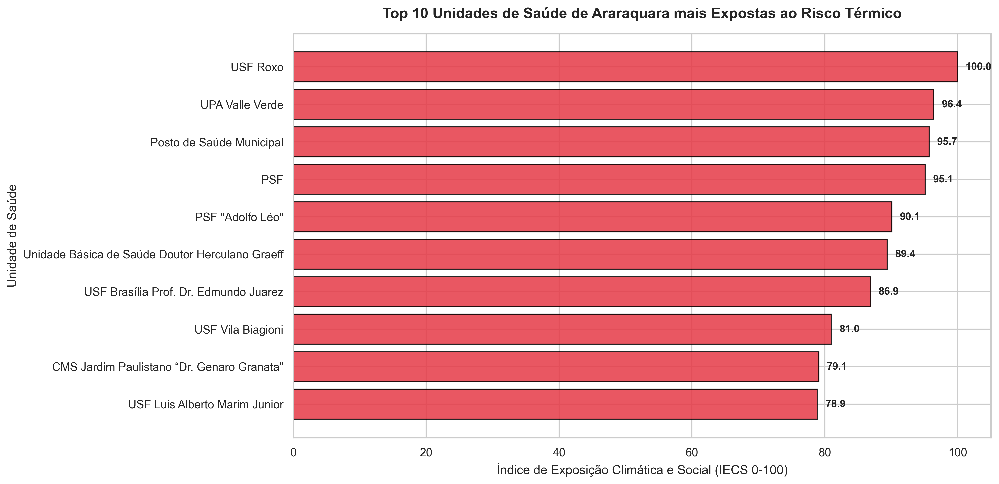
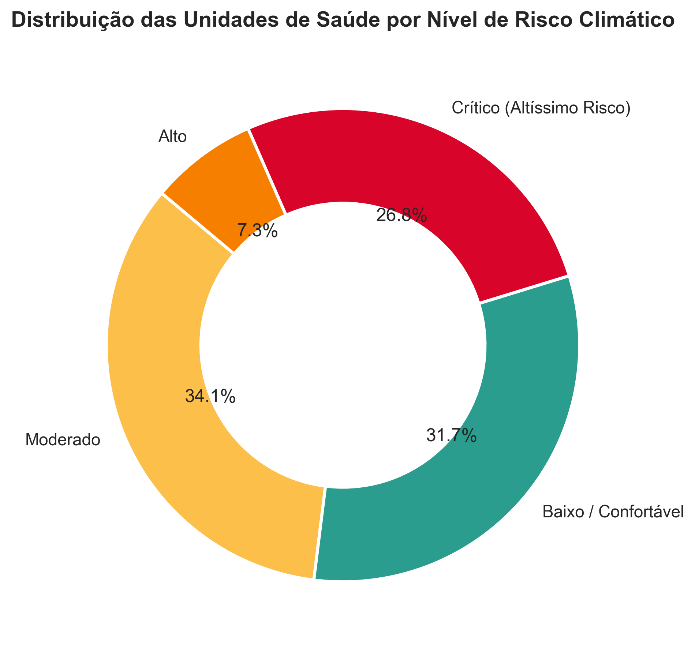

Priorizar o entorno, não só o prédio
Comece pelas unidades no topo do ranking e procure sombra, espera externa, bebedouros e rotas de acesso no raio de 300m.
Três camadas ajudam a transformar o ranking em uma pergunta de política pública.
A grade UrbVerde colore a temperatura de superfície. Vermelho indica superfícies mais quentes; isso não é a temperatura do ar.
O NDVI ajuda a enxergar cobertura vegetal. Valores menores sugerem menos proteção natural contra o aquecimento.
O índice combina temperatura, déficit de vegetação e vulnerabilidade social no entorno da unidade.
Importante: o círculo de 300m é um raio cartográfico ao redor do ponto, não uma rota de caminhada. O IECS é uma ferramenta de priorização relativa e não substitui medição local ou decisão técnica.
Use essas referências para atualizar cadastro, contexto territorial e operação em dias de calor.
O mapa funciona melhor quando cada sinal vira uma hipótese verificável no território.
Comece pelas unidades no topo do ranking e procure sombra, espera externa, bebedouros e rotas de acesso no raio de 300m.
Hospitais privados, filantrópicos e unidades estaduais podem aparecer no mesmo território, mas pedem governanças diferentes.
As 14 pendências estão visíveis, porém fora do ranking. O próximo passo é confirmar CNES, endereço e coordenada.
Combine o ranking estrutural com alertas do INMET para acionar salas de hidratação e comunicação preventiva.

